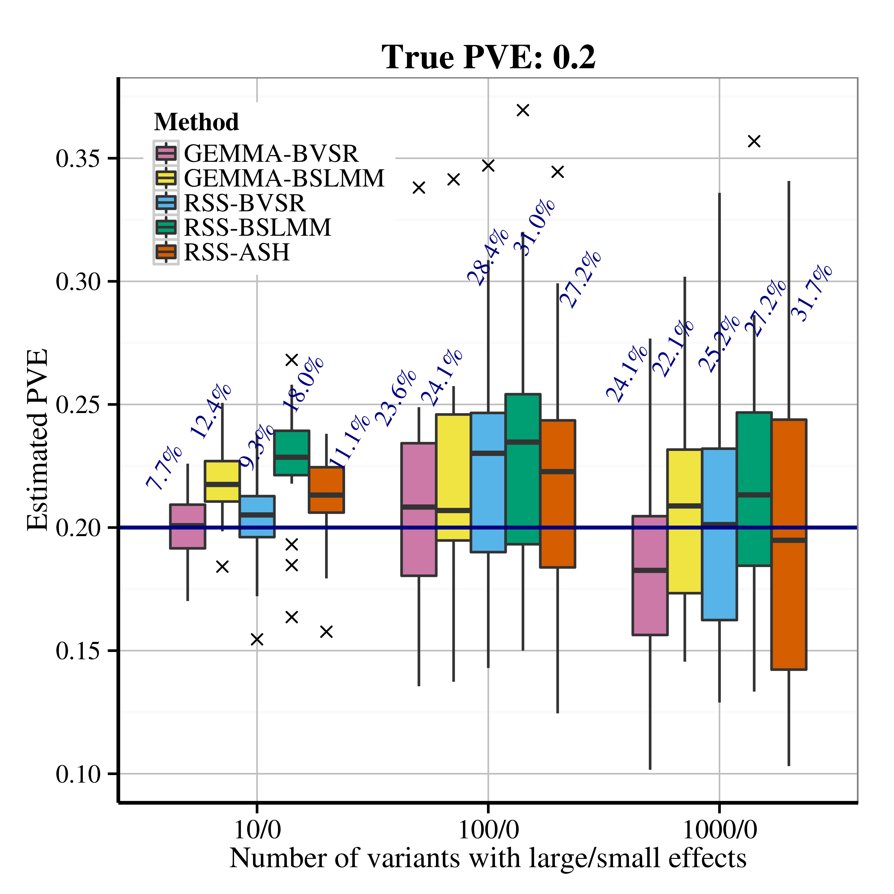
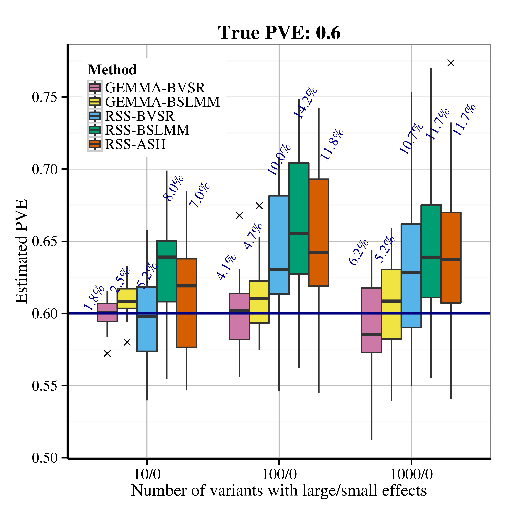
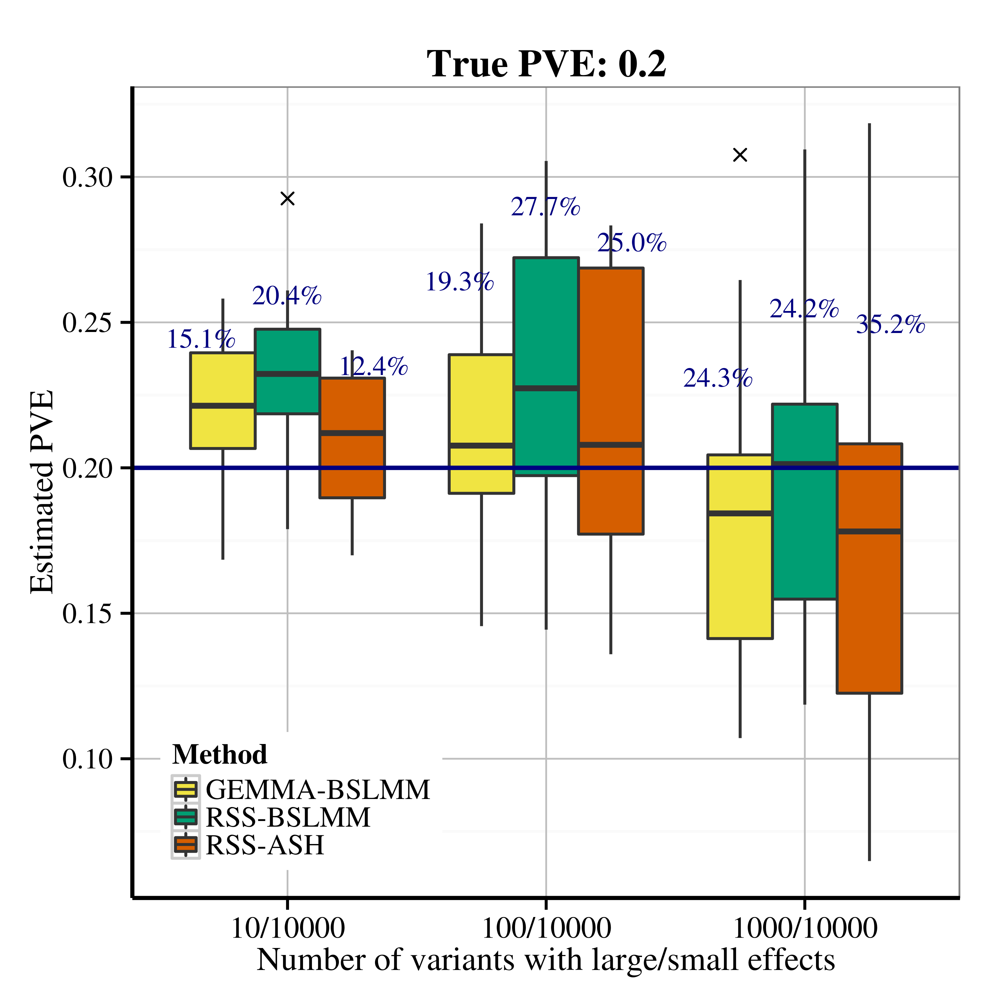
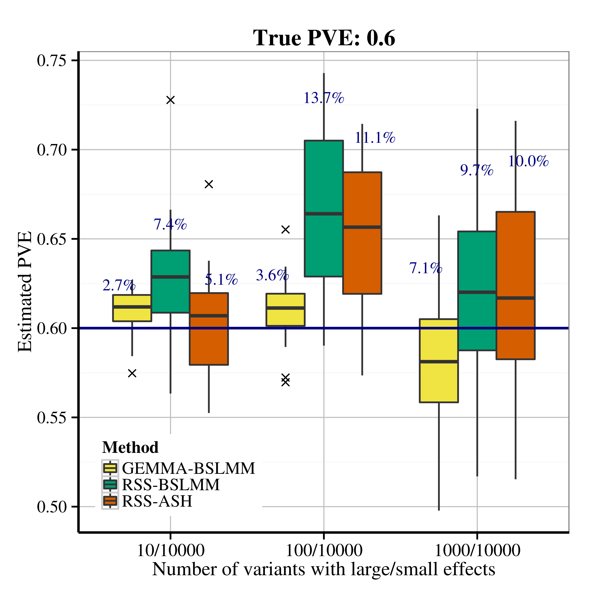

Example 1: RSS Model Fitting via MCMC & SNP Heritability Estimation
Xiang Zhu
Last updated: 2024-09-16
Checks: 7 0
Knit directory: rss/
This reproducible R Markdown analysis was created with workflowr (version 1.7.1). The Checks tab describes the reproducibility checks that were applied when the results were created. The Past versions tab lists the development history.
Great! Since the R Markdown file has been committed to the Git repository, you know the exact version of the code that produced these results.
Great job! The global environment was empty. Objects defined in the global environment can affect the analysis in your R Markdown file in unknown ways. For reproduciblity it’s best to always run the code in an empty environment.
The command set.seed(20200623) was run prior to running
the code in the R Markdown file. Setting a seed ensures that any results
that rely on randomness, e.g. subsampling or permutations, are
reproducible.
Great job! Recording the operating system, R version, and package versions is critical for reproducibility.
Nice! There were no cached chunks for this analysis, so you can be confident that you successfully produced the results during this run.
Great job! Using relative paths to the files within your workflowr project makes it easier to run your code on other machines.
Great! You are using Git for version control. Tracking code development and connecting the code version to the results is critical for reproducibility.
The results in this page were generated with repository version 941a146. See the Past versions tab to see a history of the changes made to the R Markdown and HTML files.
Note that you need to be careful to ensure that all relevant files for
the analysis have been committed to Git prior to generating the results
(you can use wflow_publish or
wflow_git_commit). workflowr only checks the R Markdown
file, but you know if there are other scripts or data files that it
depends on. Below is the status of the Git repository when the results
were generated:
Ignored files:
Ignored: .Rhistory
Ignored: .Rproj.user/
Note that any generated files, e.g. HTML, png, CSS, etc., are not included in this status report because it is ok for generated content to have uncommitted changes.
These are the previous versions of the repository in which changes were
made to the R Markdown (rmd/example_1.Rmd) and HTML
(docs/example_1.html) files. If you’ve configured a remote
Git repository (see ?wflow_git_remote), click on the
hyperlinks in the table below to view the files as they were in that
past version.
| File | Version | Author | Date | Message |
|---|---|---|---|---|
| html | 985fc1c | Xiang Zhu | 2024-07-03 | Build site. |
| Rmd | 5602ceb | Xiang Zhu | 2024-07-03 | wflow_publish("rmd/example_1.Rmd") |
| html | 6e9c8f0 | Xiang Zhu | 2021-03-05 | Build site. |
| Rmd | 1787485 | Xiang Zhu | 2021-03-05 | wflow_publish("rmd/example_1.Rmd") |
| html | bab3f58 | Xiang Zhu | 2020-06-24 | Build site. |
| html | 3488014 | Xiang Zhu | 2020-06-23 | Build site. |
| Rmd | 221b7e3 | Xiang Zhu | 2020-06-23 | wflow_publish("rmd/example_1.Rmd") |
Overview
This example illustrates how to fit RSS models using MCMC algorithms. Three types of prior distributions are considered: BVSR in Guan and Stephens (2011), BSLMM in Zhou, Carbonetto and Stephens (2013), and ASH in Stephens (2017). The MCMC output is further used to estimate the SNP heritability. This example is closely related to Section 4.2 of Zhu and Stephens (2017).
The single-SNP summary-level data are computed from a simulated GWAS dataset. The GWAS data are simulated under the Scenario 2.1 in Zhu and Stephens (2017). Specifically, 100 “causal” SNPs are randomly drawn from 12758 SNPs on chromosome 16, with effect sizes coming from standard normal \({\cal N}(0,1)\). Effect sizes of remaining SNPs are zero. The true PVE (SNP heritability) is 0.2.
To reproduce results of Example 1, please read the step-by-step guide
below and run example1.m.
Before running example1.m,
please first install the MCMC
subroutines. Please find installation instructions here.
Step-by-step illustration
Step 1. Download data files.
All data files required to run this example are freely available at
Zenodo  . Please contact me if you have trouble accessing this
file. After a complete download, you should see the following files.
. Please contact me if you have trouble accessing this
file. After a complete download, you should see the following files.
$ tree ./
./
├── example1.mat
├── example1_rssash.mat
├── example1_rssbslmm.mat
├── example1_rssbvsr.mat
└── readme
0 directories, 5 filesThe data file example1.mat contains the following
elements.
betahat: 12758 by 1 vector, single-SNP effect size estimate for each SNPse: 12758 by 1 vector, standard errors of the single-SNP effect size estimatesNsnp: 12758 by 1 vector, sample size of each SNPR: 12758 by 12758 matrix, LD matrix estimated from a reference panelbwd: integer, bandwidth of the banded matrixRBR: (bwd+1) by 12758 matrix, banded storage of matrixR
Note that only betahat, se,
Nsnp and R are needed for running MCMC. The
other two quantities, bwd and BR, are only
used in SNP heritability calculation.
Step 2. Check the “small effects” model assumption.
Using single-SNP summary data, we can compute squared sample
correlation between phenotype and each SNP, and then check the “small
effect” assumption by looking at these marginal squared correlation
values (please see Table 1 of Zhu and Stephens
(2017) for more details). The following code illustrates the “small
effect” check in example1.m1.
>> chatsqr = (betahat(:).^2) ./ (Nsnp(:).*(se(:).^2) + betahat(:).^2);
>> disp(prctile(log10(chatsqr), 0:25:100));
-11.6029 -4.1154 -3.4721 -2.9962 -1.5982Since our data are generated from genotypes of a single chromosome, the simulated effect sizes per SNP are larger than would be expected in a typical GWAS (see Table 1 Zhu and Stephens (2017)).
Step 3. Fit RSS-BVSR, RSS-BSLMM and RSS-ASH models via MCMC.
To fit RSS-BVSR and RSS-BSLMM models, we only need to specify the length of Markov chains for RSS software.
Ndraw = 2e6;
Nburn = 2e5;
Nthin = 9e1;
[betasam, gammasam, hsam, logpisam, Naccept] = rss_bvsr(betahat, se, R, Nsnp, Ndraw, Nburn, Nthin);
[bsam, zsam, lpsam, hsam, rsam, Naccept] = rss_bslmm(betahat, se, R, Nsnp, Ndraw, Nburn, Nthin);To fit RSS-ASH model, we need to specify the length of Markov chain and a grid for the prior standard deviations of multiple-SNP effect sizes.
Ndraw = 5e7;
Nburn = 1e7;
Nthin = 1e3;
sigma_beta = [0 0.001 0.003 0.01 0.03 0.1 0.3 1 3];
[bsam, zsam, wsam, lsam, Naccept] = rss_ash(betahat, se, R, Nsnp, sigma_beta, Ndraw, Nburn, Nthin);Step 4. Estimate SNP heritability.
We use the posterior sample of multiple-SNP effect sizes
(bsam) to obtain the posterior sample of SNP heritability
(pvesam).
M = length(hsam); % the length of posterior simulations
pvesam = zeros(M,1); % preallocate the pve posterior estimates
for i = 1:M
pvesam(i) = compute_pve(bsam(i,:), betahat, se, Nsnp, bwd, BR, 1);
endRecall that the SNP heritability estimator (Equation 3.8 of Zhu and Stephens
(2017)) involves vector-matrix-vector product. To speed calculation,
we exploit the banded structure of R and use the banded
version of vector-matrix-vector product implemented in
lapack. Hence, the banded storage BR, instead
of the original form R, is used to calculate SNP
heritability.
Step 5. Summarize results.
The dataset is simulated with the true SNP heritability (PVE) being 0.2. The following table summarizes the posterior estimates (with 95% credible interval) and the total computational time (including MCMC iterations and PVE calculations) for three models.
| Model | PVE estimation | Total time |
|---|---|---|
| RSS-BVSR | 0.200 [0.125, 0.290] | 1.38 hours |
| RSS-BSLMM | 0.216 [0.136, 0.306] | 2.52 hours |
| RSS-ASH | 0.197 [0.114, 0.286] | 6.69 hours |
The following histograms show the posterior distributions of estimated SNP heritability under these three models.
More simulations
Simulations in Section 4.2 of Zhu and Stephens
(2017) are essentially “replications” of the example above. The
simulated datasets for Scenarios 2.1 and 2.2 in Section 4.2 of Zhu and Stephens
(2017) are available as
rss_example1_simulations.tar.gz2.
Each simulated dataset contains three files:
genotype.txt, phenotype.txt and
simulated_data.mat. The files genotype.txt and
phenotype.txt are the genotype and phenotype files for GEMMA. The
file simulated_data.mat contains three cells.
true_para = {pve, beta, gamma, sigma};
individual_data = {y, X};
summary_data = {betahat, se, Nsnp};Only the summary_data cell above is used as the input
for RSS methods.
The RSS methods also require an estimated LD matrix R.
This matrix R is provided in the file
genotype.mat.
After applying RSS methods to these simulated data, we obtain the following PVE estimation results.
| Scenario 2.1 (sparse), True PVE = 0.2 | Scenario 2.1 (sparse), True PVE = 0.6 |
|---|---|
|  |  |
| Scenario 2.2 (polygenic), True PVE = 0.2 | Scenario 2.2 (polygenic), True PVE = 0.6 |
|---|---|
|  |  |
Footnotes:
The function
prctileused inexample1.mrequires the Statistics and Machine Learning Toolbox. Please see this commit (courtesy of Dr. Peter Carbonetto) if this required toolbox is not available in your environment.Currently these files are locked, since they contain individual-level genotypes from Wellcome Trust Case Control Consortium (WTCCC, https://www.wtccc.org.uk/). You need to get permission from WTCCC before we can share these files with you.
─ Session info ───────────────────────────────────────────────────────────────
setting value
version R version 4.4.1 (2024-06-14)
os macOS Sonoma 14.6.1
system aarch64, darwin20
ui X11
language (EN)
collate en_US.UTF-8
ctype en_US.UTF-8
tz America/Los_Angeles
date 2024-09-16
pandoc 3.1.11 @ /Applications/RStudio.app/Contents/Resources/app/quarto/bin/tools/aarch64/ (via rmarkdown)
─ Packages ───────────────────────────────────────────────────────────────────
package * version date (UTC) lib source
bslib 0.8.0 2024-07-29 [1] CRAN (R 4.4.0)
cachem 1.1.0 2024-05-16 [1] CRAN (R 4.4.0)
callr 3.7.6 2024-03-25 [1] CRAN (R 4.4.0)
cli 3.6.3 2024-06-21 [1] CRAN (R 4.4.0)
devtools 2.4.5 2022-10-11 [1] CRAN (R 4.4.0)
digest 0.6.37 2024-08-19 [1] CRAN (R 4.4.1)
ellipsis 0.3.2 2021-04-29 [1] CRAN (R 4.4.0)
evaluate 0.24.0 2024-06-10 [1] CRAN (R 4.4.0)
fansi 1.0.6 2023-12-08 [1] CRAN (R 4.4.0)
fastmap 1.2.0 2024-05-15 [1] CRAN (R 4.4.0)
fs 1.6.4 2024-04-25 [1] CRAN (R 4.4.0)
getPass 0.2-4 2023-12-10 [1] CRAN (R 4.4.0)
git2r 0.33.0 2023-11-26 [1] CRAN (R 4.4.0)
glue 1.7.0 2024-01-09 [1] CRAN (R 4.4.0)
htmltools 0.5.8.1 2024-04-04 [1] CRAN (R 4.4.0)
htmlwidgets 1.6.4 2023-12-06 [1] CRAN (R 4.4.0)
httpuv 1.6.15 2024-03-26 [1] CRAN (R 4.4.0)
httr 1.4.7 2023-08-15 [1] CRAN (R 4.4.0)
jquerylib 0.1.4 2021-04-26 [1] CRAN (R 4.4.0)
jsonlite 1.8.8 2023-12-04 [1] CRAN (R 4.4.0)
knitr 1.48 2024-07-07 [1] CRAN (R 4.4.0)
later 1.3.2 2023-12-06 [1] CRAN (R 4.4.0)
lifecycle 1.0.4 2023-11-07 [1] CRAN (R 4.4.0)
magrittr 2.0.3 2022-03-30 [1] CRAN (R 4.4.0)
memoise 2.0.1 2021-11-26 [1] CRAN (R 4.4.0)
mime 0.12 2021-09-28 [1] CRAN (R 4.4.0)
miniUI 0.1.1.1 2018-05-18 [1] CRAN (R 4.4.0)
pillar 1.9.0 2023-03-22 [1] CRAN (R 4.4.0)
pkgbuild 1.4.4 2024-03-17 [1] CRAN (R 4.4.0)
pkgconfig 2.0.3 2019-09-22 [1] CRAN (R 4.4.0)
pkgload 1.4.0 2024-06-28 [1] CRAN (R 4.4.0)
processx 3.8.4 2024-03-16 [1] CRAN (R 4.4.0)
profvis 0.3.8 2023-05-02 [1] CRAN (R 4.4.0)
promises 1.3.0 2024-04-05 [1] CRAN (R 4.4.0)
ps 1.8.0 2024-09-12 [1] CRAN (R 4.4.1)
purrr 1.0.2 2023-08-10 [1] CRAN (R 4.4.0)
R6 2.5.1 2021-08-19 [1] CRAN (R 4.4.0)
Rcpp 1.0.13 2024-07-17 [1] CRAN (R 4.4.0)
remotes 2.5.0 2024-03-17 [1] CRAN (R 4.4.0)
rlang 1.1.4 2024-06-04 [1] CRAN (R 4.4.0)
rmarkdown 2.28 2024-08-17 [1] CRAN (R 4.4.0)
rprojroot 2.0.4 2023-11-05 [1] CRAN (R 4.4.0)
rstudioapi 0.16.0 2024-03-24 [1] CRAN (R 4.4.0)
sass 0.4.9.9000 2024-07-11 [1] Github (rstudio/sass@9228fcf)
sessioninfo 1.2.2 2021-12-06 [1] CRAN (R 4.4.0)
shiny 1.9.1 2024-08-01 [1] CRAN (R 4.4.0)
stringi 1.8.4 2024-05-06 [1] CRAN (R 4.4.0)
stringr 1.5.1 2023-11-14 [1] CRAN (R 4.4.0)
tibble 3.2.1 2023-03-20 [1] CRAN (R 4.4.0)
urlchecker 1.0.1 2021-11-30 [1] CRAN (R 4.4.0)
usethis 3.0.0 2024-07-29 [1] CRAN (R 4.4.0)
utf8 1.2.4 2023-10-22 [1] CRAN (R 4.4.0)
vctrs 0.6.5 2023-12-01 [1] CRAN (R 4.4.0)
whisker 0.4.1 2022-12-05 [1] CRAN (R 4.4.0)
workflowr * 1.7.1 2023-08-23 [1] CRAN (R 4.4.0)
xfun 0.47 2024-08-17 [1] CRAN (R 4.4.0)
xtable 1.8-4 2019-04-21 [1] CRAN (R 4.4.0)
yaml 2.3.10 2024-07-26 [1] CRAN (R 4.4.0)
[1] /Library/Frameworks/R.framework/Versions/4.4-arm64/Resources/library
──────────────────────────────────────────────────────────────────────────────